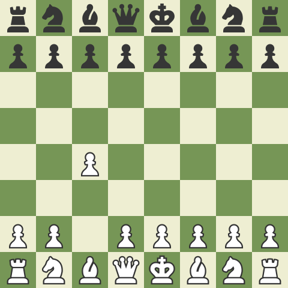

How to play the English opening
- Begin with 1.c4: As White, start the game by playing 1.c4, advancing your queen's pawn one square forward. This move constitutes the English Opening, focusing on controlling the center and preparing for flexible development.
- Aim for Central Control: While 1.c4 doesn't immediately occupy the center, the English Opening aims to indirectly challenge Black's central control. The idea is to create a solid foundation and initiate strategic play.
- Flexible Piece Development: Develop your pieces harmoniously while keeping flexibility in your plans. Knights can be developed to c3 and f3, bishops to g2 and e2, and the queen to d2 or e1. Avoid overextending and maintain the potential for diverse pawn structures and plans.
- Consider Different English Opening Systems: The English Opening offers various systems, each with its own strategic ideas and pawn structures. Some popular systems include the Botvinnik System, Hedgehog System, Reversed Sicilian, and King's English. Study and choose the system that suits your style and preferences.
- Control the Center with Pawns: Utilize pawn breaks and maneuvers to control the center and restrict Black's pawn breaks. Moves like d2-d4 or f2-f3 can challenge Black's central control and create dynamic positions.
- Flexible Pawn Structure: The English Opening often results in unique pawn structures that can arise from different systems and variations. Understand the strengths and weaknesses of these structures and adjust your plans accordingly. Key structures include the reversed Sicilian pawn structure and the hedgehog pawn formation.
- Plan for King Safety: Ensure the safety of your king by timely castling. Kingside castling (O-O) is commonly preferred in the English Opening, but queenside castling (O-O-O) may also be an option in some positions. Consider the safety of your king while connecting the rooks for improved coordination.
- Strategic Maneuvering: The English Opening emphasizes strategic maneuvering and planning. Focus on piece coordination, piece exchanges, and exploiting weak squares in your opponent's position. Aim to create imbalances and positional advantages that lead to long-term advantages.
- Study Master Games: Analyze classic games played in the English Opening to deepen your understanding of strategic concepts and typical plans. Explore games of players such as Anatoly Karpov, Vladimir Kramnik, and Magnus Carlsen to gain insights into effective English Opening strategies.
- Continuously Learn and Adapt: The English Opening offers a wide range of possibilities and ideas. Continuously study and analyze different variations, understand typical plans, and adapt your strategies based on the evolving position. Regular practice and experience will enhance your understanding and mastery of this dynamic opening.
